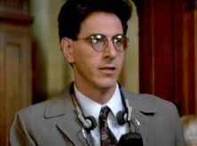

Who you gonna call?
We are the best in paranormal investigation and elimination in all of New York!
The Ghostbusters is a small business with the sole purpose of understanding, researching, and eliminating all ghost-related threats. The team consists of Peter Venkman, Ray Stantz, Egon Spengler, and Winston Zeddemore.
We tackle all kinds of ghost-related problems and questions!
We have an immaculate reputation for what we do.
Do you have a feeling some paranormal activity is happening around you? Give us a call, and we'll be right with you.
Is your neighbor acting stranger than he usually is? Then it might be a ghost problem for us to solve!
Do you have any questions about these specters and what they do? Send us a message, and we'll give you the deets!

About the Website
Hey there! My name is Marcopolo, and when I thought about making this website, I thought:
"What if I was making a website for the Ghostbusters?"
I wanted to apply my newfound web development knowledge while having fun with this project, and I feel like I succeeded in both regards. In this site, you'll find all sorts of neat features such as buttons, image links, and much more. On your left, there's even a "News" column that scrolls with you!
I hope that the design and function of this website appeal to you, dear viewer... And maybe also the actual Ghostbusters~
NEWS
TOP 5 WAYS to Keep Yourself Safe from Ghosts!

EXCLUSIVE! An Interview with Egon Spengler

The End of Stay Puft?
Ray Stantz on the Matter...